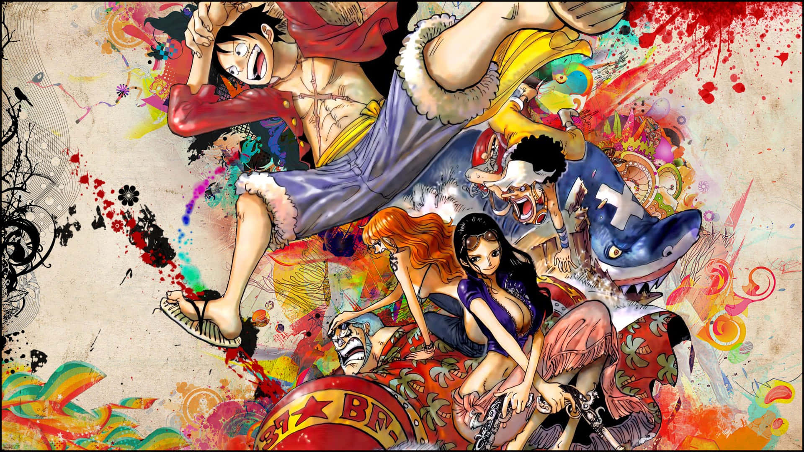
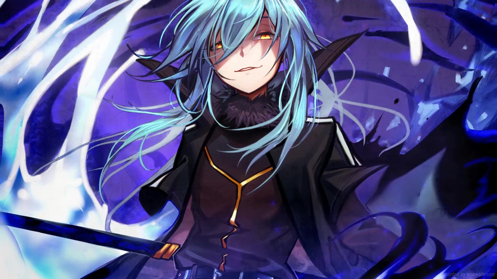
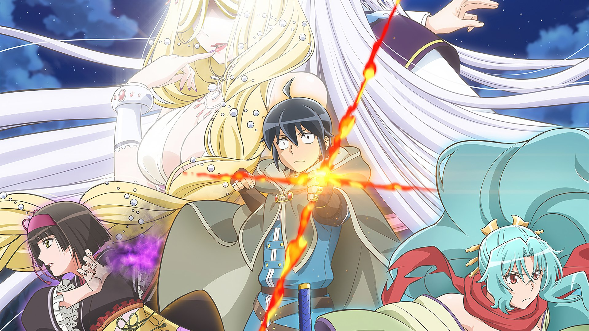
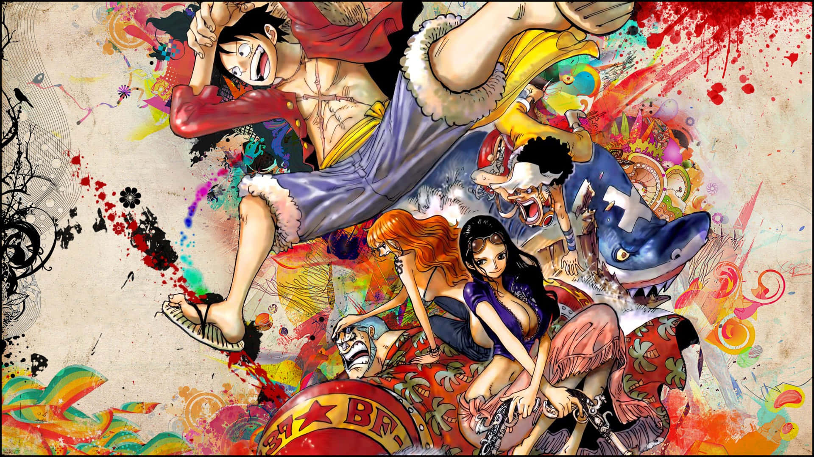
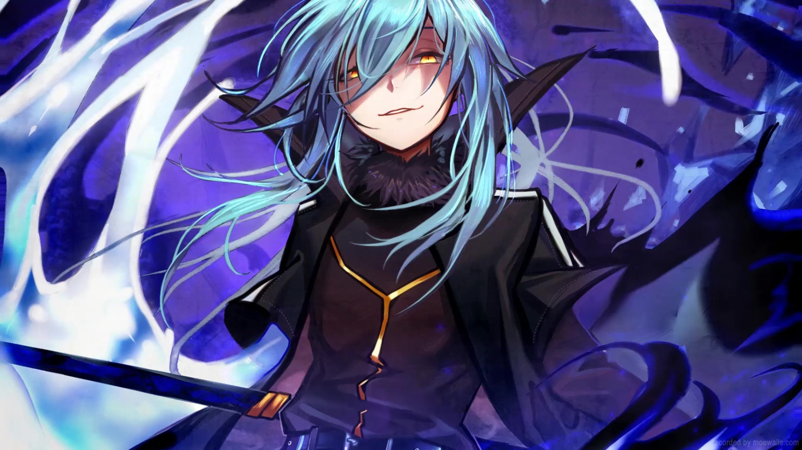
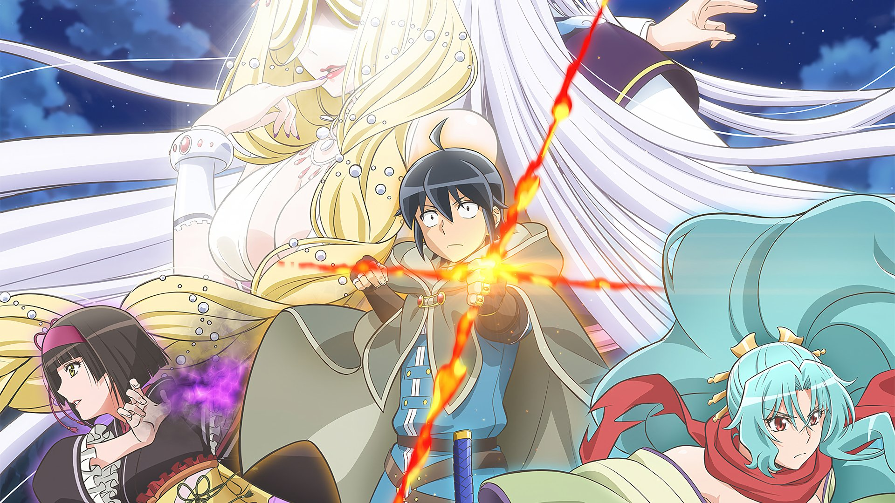

Solo Leveling
Há mais de uma década, surgiu uma misteriosa passagem chamada "portal", que conecta este mundo a uma dimensão diferente, o que fez com que pessoas despertassem poderes únicos… e essas pessoas são chamadas de "caçadores". Os caçadores usam seus poderes sobre-humanos para conquistar masmorras dentro dos portais e assim ganhar a vida. Sung Jinwoo, um caçador de nível baixo, é considerado o caçador mais fraco de toda a humanidade.
Overlord
Quando um MMORPG bastante popular anuncia que será desligado permanentemente, um jogador veterano se recusa a deslogar: Momonga. À medida que NPCs começam a desenvolver personalidades e mentes próprias, ele decide usar suas habilidades para se tornar o novo chefão do jogo.
Death March Kara Hajimaru Isekai
Conta a história de um programador de 29 anos que vai parar em um mundo de RPG. Ele reencarna em um corpo de 15 anos e depois de entender o que esta acontecendo decide tentar viver em paz por ali. Infelizmente a aparição de Maou vai atrapalhar seus planos.
The Eminence In Shadow
A trama gira em torno de um jovem que se transporta para um mundo de fantasia, onde ele se vê como um mestre das intrigas, ativo em conspirações políticas e manobras nos bastidores.
One Piece
Houve um homem que conquistou tudo aquilo que o mundo tinha a oferecer, o lendário Rei dos Piratas, Gold Roger. Capturado e condenado à execução pelo Governo Mundial, suas últimas palavras lançaram legiões aos mares. "Meu tesouro? Se quiserem, podem pegá-lo. Procurem-no! Ele contém tudo que este mundo pode oferecer!". Foi a revelação do maior tesouro, o One Piece, cobiçado por homens de todo o mundo, sonhando com fama e riqueza imensuráveis... Assim começou a Grande Era dos Piratas!
Tensei Shitara Slime Datta Ken
O solitário Satoru Mikami, de 37 anos, está preso em um trabalho sem futuro, infeliz com sua vida mundana, mas depois de morrer nas mãos de um ladrão, ele desperta para um novo começo em um reino de fantasia...como um monstro de slime(lodo)! Enquanto ele se acostuma com sua nova existência, suas façanhas com os outros monstros desencadeiam uma cadeia de eventos que irão mudar seu novo mundo para sempre!
Tsukimichi-Moonlit Fantasy
Makoto Misumi era um adolescente qualquer até ser invocado para ser o "herói" de outro mundo... Mas a Deusa deste novo mundo o achou feio demais, o despiu de seu papel de herói e o enviou para os confins do mundo. Nesta terra desolada, ele encontra dragões, aranhas, orcs, anões e muitas outras raças não-humanas, mas consegue se desvencilhar dessas ameaças com o uso de técnicas de combate e de magia. Conseguirá Makoto sobreviver neste mundo novo cheio de perigos?